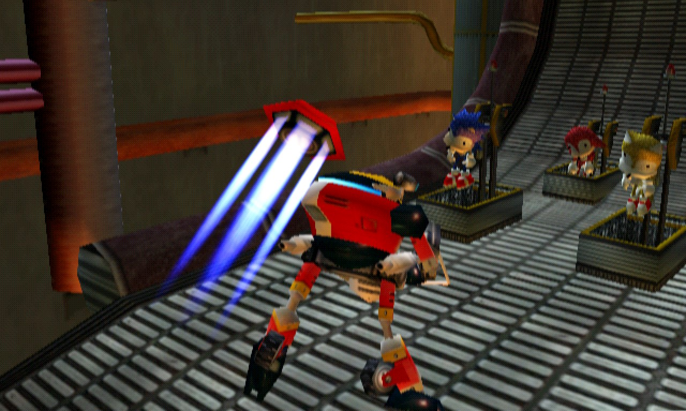
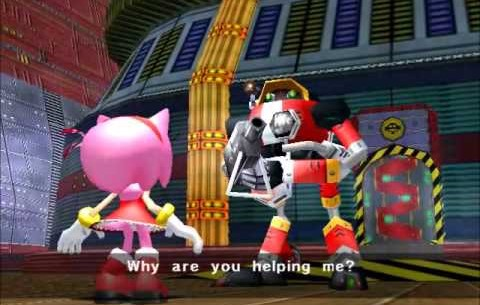
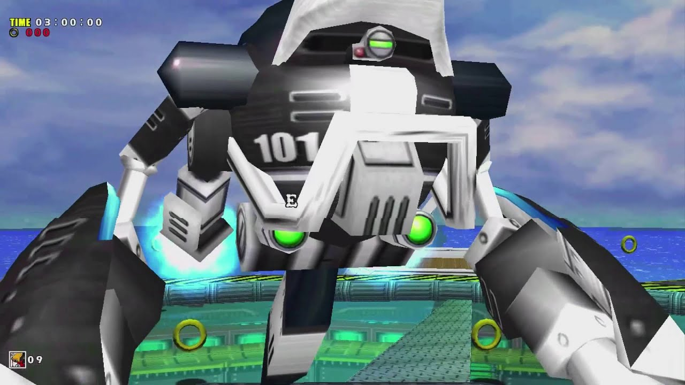
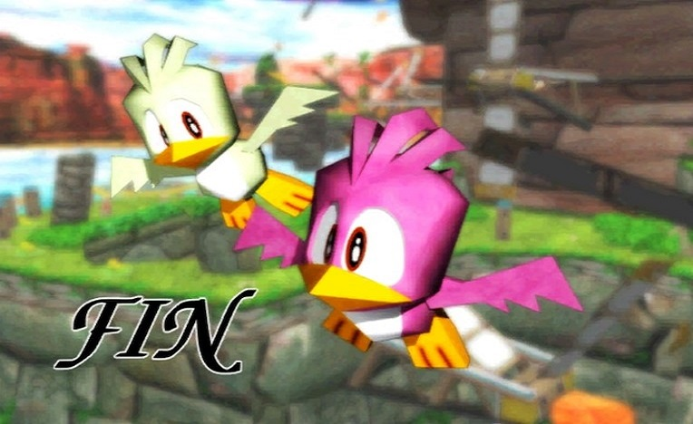

SADX - Campanha do Gamma
Você é um robô criado por Eggman e acaba de ser criado, você enxerga pela primeira vez e Eggman está em sua frente. Seu codinome é Gamma, e você é o segundo robô da linha E-100, "E-102 Gamma". Com o controle de Gamma, vá até a porta onde Eggman está. Entre na fase Final Egg para testar suas habilidades.
Stage 01 - Final Egg
Nas fases de Gamma, o timer corre de forma decrecente, um cronometro. Seu objetivo é terminar as fases sem deixar o cronometro zerar. Atirando em inimigos, você aumenta o seu timer. Assim como o avião tornado, precionando o botão de ataque sem soltar, fará você mirar em multiplos inimigos. Combos dão tempo extra para o timer. Com isso em mente, apenas conclua a fase que é extremamente facil, e a use como treino, ja que ela é basicamente isso. Termine a fase eliminando o boneco de Sonic.
Desça as escadas e vá até Eggman. Ele gostou da performance de Gamma e decide dar a ele uma chance de ser parte da tripulação do Egg Carrier. E-101 Beta aparece e Eggman manda os dois lutarem um contra o outro. Aquele que vencer fará parte da tripulação do Egg Carrier. Quando Beta atirar um míssil mire nele e no míssil e você acertará os dois. Repita a operação 3 vezes e Beta será derrotado. Eggman surpreende-se com a performance de Gamma e como prometido, Gamma fará parte da tripulação do Egg Carrier. No hall principal, Gamma e as unidades E-103, E-104 e E-105 estão aguardando suas ordens. Eggman mostra no monitor o único sapo com cauda do mundo, Froggy. Ele ordena que seus robôs capturem este sapo. Gamma será largado em Station Square. Vá em direção ao hotel e vá até a entrada de Emerald Coast. Atire nos alvos para liberar o caminho e entrar na Emerald Coast.
Stage 02 - Emerald Coast
Nesta fase você deve capturar Froggy que está no final dela. Diferente de Sonic, aqui você não passa nem por 30% da fase completa. Mire rapidamente no máximo de inimigos que conseguir enquanto desvia de seus ataques.
Ao fim da fase, uma luz cerca Gamma e ele é transportado para um lugar desconhecido. Isso pode ser um problema. Vá em frente e encontre um bando de Chao. Quando Gamma tenta se aproximar alguém o impede, Tikal, que irá conversar com você. Após isso, Gamma está de volta à Egg Carrier. Todos os robôs estão com um sapo normal. Eggman fica irritado com os robôs, pois não trouxeram o sapo que ele queria. Ele queria o que tinha a cauda de Chaos e que tinha engolido uma Esmeralda do Caos. Mas Eggman percebe que o que Gamma trouxe é o certo e fica orgulhoso dele. Eggman despacha os outros robôs para outras áreas deixando apenas Gamma à bordo. Na última porta há uma garota com um pássaro. Gamma deve trazer o pássaro para Eggman. Ele vai até as três portas, mas se confunde e entra na porta da esquerda. Quando entra, Gamma se depara com um novo robô. Mas pelas partes que estão no chão aquele robô parece ser Beta. Na sala certa, ele encontra Amy. Ele exige que ela lhe entregue o pássaro azul, mas ela não entrega. O pássaro escapa das mãos de Amy e fica frente à frente com Gamma. Gamma sofre um pequeno tilt e resolve soltá-los. Volte para o Hall principal.
Após sair da cela, Eggman mandará Gamma equipar-se com o Jet Booster. Ele está localizado na sala ao lado direito da entrada do Chao Garden de Egg Carrier. Isto dará a E-102 a flutuação. Suba pelo elevador circular para a parte exterior da Egg Carrier. Sonic, Tails, Amy e Eggman estão lá. Eggman fala para Gamma destruí-los. Enfrente Sonic. Mesmo esquema de sempre, 3 hits e acabou. Ao fim da luta, Amy intervem e a para, a Egg Carrier começa a cair e Sonic vai atrás de Eggman. Amy fala para Gamma não obedecer mais a Eggman e todos saem da nave.
Em Mystic Ruins, Gamma relembra de todo o ocorrido e considera Eggman como seu inimigo. Ele deleta o registro principal e assimila que deve salvar seus amigos da série E-100. Vá para perto da Workshop de Tails e pegue a Pedra do Vento. Vá para a caverna perto do lago e coloque a pedra sobre o altar para abrir a fase Windy Valley.
Stage 03 - Windy Valley
A partir dessa fase, temos uma mecanica nova. Ao fim das fases, Gamma irá enfrentar um de seus irmãos da linha E-100, então se prepare para os combates. Tenha cuidado com as pontes da fase, elas se caem quando você entra nelas. Mire no inimigo em forma de centopéia e depois atire, suas partes contam como inimigos isolados, te dando um combo. Seu objetivo final é derrotar E-103 Delta e liberta-lo, mire nele e nos míssieis dele e dispare até que ele seja derrotado. Uma caverna se abrirá perto da Estação de Trem, vá por ela até o Campo Aberto, destrua a gaiola do macaco e entre na Red Mountain.
Stage 04 - Red Mountain
Tente achar inimigos para mirar e atirar, aqui a lava não sobe, mas ainda é mortal. Seu objetivo final aqui é libertar E-104 Epsilon. Use o mesmo esquema que usou contra Delta e você vencerá fácil. E-103 Delta e E-104 Epsilon foram resgatados, agora faltam E-105 Zeta e E-101 Beta. Gamma deduz que as unidades restantes estão na Egg Carrier. Vá para a estação e em vez de subir as escadas vá por baixo e pegue a balsa para a Egg Carrier. Gamma localiza E-105 Zeta no setor da Hot Shelter. Na Egg Carrier vá para a parte de trás da nave e desça para o Hall Principal. Quando entrar no hall principal, vá à sala oposta da onde você pegou seu Jet Booster, para poder pegar o Laser Blaster. Agora volte e vá até a porta do meio no fundo do Hall e entre na Hot Shelter.
Stage 05 - Hot Shelter
Essa fase é particularmente dificil e você não tem muito tempo. Não caçe inimigos, apenas prossiga a fase rapido e elimine os que você conseguir ver A primeira parte é muito parecida com a campanha de Amy, porém na ponte móvel, na longa queda, flutue e mire em quanto inimigos você conseguir. Nos trêns, você precisa alternar entre eles para prosseguir ate os controladores e saltar no final da fase. Você enfrenta E-105 Zeta, que está muito modificado, inclusive com carcaças de Dreamcast em seu corpo. Aqui sempre fique mirando e caminhando ao redor para destruir os mísseis e os canhões laterais, enquanto desvia dos tiros. Quando todos os canhões forem destruídos, Zeta é derrotado. Volte para a parte superior da nave. Beta aparece em sua nova forma e Gamma decide resgata-lo em uma ultima luta para salvar os E-100. Enfrente E-101 MK II.
E-101 Beta MK II
Essa luta é meio complicada. Espere os ataques com a garra de E-101. Desvie do ataque indo para os lados e rapidamente e trave a mira nele para atirar. Você só pode atacá-lo com a guarda baixa, ou seja, depois dele executar o ataque com a garra. Ele também lançará uma rajada de mísseis, desvie ou destrua todos e trave a mira em Beta porque ele fará outro ataque de garra em seguida. Quando ele lançar energia concentrada em você, apenas desvie, o raio dela é pequeno, porem, se ele concentrar muito, o que ocorre em alguns casos, fique no MEIO da arena e quando ele soltar, corra para os cantos, ficando fora do raio de explosão. Preste atenção de que forma ele irá atacar. pois quando ele usar o ataque com a garra, é sua chance de acertá-lo. Com o fim de E-101 Beta, vem o fim do jogo com E-102, o final de campanha mais triste desse jogo.
Beta cai no chão aparentemente desativado, mas quando Gamma se aproxima, Beta o atira pela ultima vez, antes de entrar em curto total e explodit, libertando um pássaro branco. Gamma está seriamente danificado e fica frente à frente com o pássaro. Uma imagem distorcida aparece e o pássaro começa a se afastar de Gamma. Gamma cai de joelhos e a imagem fica nítida. É uma imagem da família do pássaro azul que está com Amy, onde o pássaro branco aparece também. Gamma olha para trás e entra em curto, caindo logo em seguida. Enquanto o pássaro se afasta Gamma explode. A explosão é imensa e quando o pássaro olha para trás encontra sua esposa. Gamma e Beta tinham dentro de si a familia do passaro Azul que Amy Rose tanto procura.
